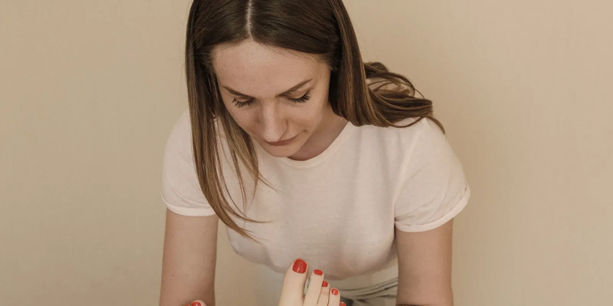

7 hábitos diarios para mejorar la circulación de tus piernas
No necesitas cambios drásticos para sentir tus piernas más livianas. Pequeños hábitos, repetidos cada día, pueden marcar una diferencia real en cómo circula la sangre por tus piernas. Te contamos cuáles, con respaldo médico.

Si terminas el día con las piernas pesadas, un poco hinchadas o "cansadas" sin haber hecho nada extraordinario, no estás sola: es una de las molestias más comunes que vemos en consulta. La buena noticia es que mejorar la circulación de las piernas no depende solo de un tratamiento médico, sino también de hábitos simples que puedes incorporar en tu rutina diaria. Aquí te contamos siete, explicados de forma clara y sin promesas exageradas.
Por qué el movimiento es la base de una buena circulación
La sangre de las piernas tiene que subir hacia el corazón en contra de la gravedad. Para lograrlo, cuenta con el impulso de los músculos de la pantorrilla: cada vez que caminas o mueves el tobillo, esos músculos se contraen y "exprimen" las venas, empujando la sangre hacia arriba. A ese mecanismo se le conoce, muchas veces, como la bomba muscular de la pantorrilla — y entenderlo explica por qué el movimiento es, casi siempre, el primer consejo que damos.
7 hábitos diarios para mejorar la circulación de tus piernas
1. Camina un poco, varias veces al día
No hace falta una rutina exigente: caminar a paso firme unos minutos, varias veces al día, activa la bomba muscular de la pantorrilla y favorece el retorno venoso. Si tu trabajo te obliga a estar mucho tiempo quieta, levantarte cada hora y dar una vuelta corta ya suma.
2. Evita pasar muchas horas seguidas de pie o sentada
Estar inmóvil, ya sea de pie o sentada, hace que la sangre y los líquidos tiendan a acumularse en la parte baja de las piernas. Si tu trabajo o tu día a día implican largas jornadas en una misma posición, te puede servir revisar nuestra guía sobre cuidado de piernas cuando pasas el día de pie. Allí encontrarás pausas activas y pequeños ajustes que sí se pueden sostener en el tiempo.
3. Eleva las piernas varias veces al día
Cuando descansas con los pies por encima del nivel del corazón, la gravedad favorece que la sangre regrese con más facilidad, lo que reduce la hinchazón. Un rato de 15 a 20 minutos, un par de veces al día, puede ayudarte a sentir las piernas más ligeras. Algunas personas también encuentran útil elevar ligeramente el pie de la cama para descansar mejor durante la noche.
4. Considera las medias de compresión, con acompañamiento profesional
Las medias de compresión ejercen una presión gradual que facilita el retorno venoso y ayuda a reducir la sensación de pesadez, sobre todo en jornadas largas de pie, sentada o en viajes prolongados. No todas las personas las necesitan a diario ni todos los niveles de compresión sirven para lo mismo, así que lo mejor es que un profesional valore tu caso antes de usarlas de forma constante. Puedes leer más en nuestra guía sobre medias de compresión.
5. Cuida el calor y la ropa muy ajustada
El calor dilata las venas para ayudar a bajar la temperatura corporal, y eso dificulta que la sangre regrese hacia arriba. Por eso, exponerte mucho tiempo al sol directo, a saunas o a duchas muy calientes puede hacer que las piernas se sientan peor. La ropa, las medias o el calzado demasiado ajustados en piernas, tobillos o cintura también pueden entorpecer la circulación.
6. Mantente hidratada y cuida tu alimentación
Beber suficiente agua ayuda a que la sangre fluya con más facilidad. Además, reducir el consumo de sal puede ayudar a disminuir la retención de líquidos, y mantener un peso saludable quita presión sobre las venas de las piernas. Ninguno de estos cambios sustituye una valoración médica, pero sí suman.
7. Practica ejercicio regular de bajo impacto
Caminar, nadar o andar en bicicleta de forma regular son actividades especialmente recomendadas para la salud venosa, porque activan la circulación sin generar demasiado impacto sobre las articulaciones. La constancia importa más que la intensidad: es mejor moverte un poco casi todos los días que hacer un esfuerzo grande una sola vez a la semana.
La bomba muscular de la pantorrilla se conoce, en muchos textos médicos, como el "segundo corazón" de las piernas: cada paso que das es un pequeño empujón para que la sangre suba de nuevo hacia el corazón.
Si ya sientes las piernas cansadas o pesadas casi todos los días, más allá de estos hábitos, vale la pena entender qué hay detrás. En nuestro artículo sobre piernas cansadas y pesadas: causas frecuentes explicamos cuándo se trata de algo circulatorio y cuándo no. Y si quieres una valoración con eco doppler para conocer el estado real de tus venas, nuestro equipo de salud vascular puede acompañarte en ese proceso.
Recuerda que estos hábitos ayudan a cuidar tus piernas en el día a día, pero no reemplazan una valoración cuando los síntomas persisten o van en aumento. Si tienes dudas sobre tu caso, puedes agendar una cita con nosotros.
Preguntas frecuentes
¿Cuánto tiempo tarda en notarse una mejora en la circulación de las piernas?
No hay un tiempo exacto porque depende de cada persona. Sin embargo, muchas mujeres notan que las piernas se sienten menos pesadas al final del día después de algunas semanas de mantener hábitos como caminar a diario, moverse cada cierto tiempo y elevar las piernas. Si después de varias semanas no notas ningún cambio, o la molestia empeora, es momento de pedir una valoración.
¿Caminar todos los días realmente ayuda a la circulación de las piernas?
Sí. Al caminar, los músculos de la pantorrilla se contraen y actúan como una bomba que empuja la sangre de las venas hacia el corazón, contrarrestando el efecto de la gravedad. Por eso caminar unos minutos varias veces al día es una de las medidas más recomendadas para activar la circulación en las piernas.
¿Es necesario usar medias de compresión todos los días?
No siempre. Las medias de compresión pueden ayudar en situaciones como trabajos de muchas horas de pie o sentada, viajes largos o cuando ya existe insuficiencia venosa. Pero antes de usarlas a diario conviene que un profesional valore tu caso, porque tienen algunas contraindicaciones y existen distintos niveles de compresión.
¿Qué hábitos empeoran la circulación de las piernas?
Varios hábitos dificultan el retorno de la sangre desde las piernas. Los más frecuentes son pasar muchas horas seguidas de pie o sentada sin moverte, la exposición prolongada al calor (saunas, sol directo, agua muy caliente), la ropa o el calzado muy ajustado y el sedentarismo.